On this page
New to CTFs and feeling intimidated? Start with How to approach CTFs. If you just want the list, jump straight to a provider.

Not sure where to start? Begin with our cloud security overview or the learning roadmap to find the right challenges for your level. Stuck on terminology like SSRF, IMDSv2, or OIDC? Use the cloud security glossary. To see how these techniques play out in real attacks, read the breach kill chains.
About This Collection
CTF challenges are one of the best ways to build real cloud security intuition. This page collects free and open-source challenges covering the major cloud providers, Kubernetes, identity, AI/LLM safety, CI/CD, and incident response, plus reverse engineering for the analysis skills that underpin all of them. Difficulty ranges from beginner-friendly browser challenges to multi-stage vulnerable environments you deploy in your own cloud account. They pair naturally with the cloud penetration testing guide: CTFs build the intuition, that guide covers the methodology and tooling.
Know of a CTF we're missing? See how to contribute
or run python3 tools/submit_ctf.py.
Find a CTF by Cloud and Setup
Find the row for the cloud you want to practice on, then the column for how much setup you want to do. Each name links to its card further down. Three entries come from Wiz (disclosure: the site's author works at Wiz): the Championship, The Cloud Hunting Games, and Prompt Airlines.
| Cloud | Hosted play in the browser | On your machine Docker, VMs, kind, or a scan | In your own account creates real resources |
|---|---|---|---|
| AWS | flAWS flAWS 2 The Cloud Hunting Games | CfnGoat CDKGoat | CloudGoat IAM Vulnerable CloudFoxable Pathfinding Labs ServerlessGoat AWSGoat |
| Azure | Broken Azure | None listed | BadZure EntraGoat AzureGoat XMGoat |
| GCP | None listed | None listed | Thunder CTF GCP Goat Secure Kubernetes |
| Kubernetes | None listed | Kubernetes Goat Bust a Kube Kube Security Lab | OWASP EKS Goat ControlPlane Simulator |
| Multi-cloud | Wiz Championship | TerraGoat | CNAPPGoat |
| AI, CI/CD & secrets | Gandalf: Agent Breaker OWASP FinBot CTF Prompt Airlines | OWASP WrongSecrets Damn Vulnerable MCP Server CI/CD Goat | AIGoat CI/CDon't GitHub Actions Goat |
Anything in the last column creates real resources in your account, so it can cost money while it runs; tear it down when you finish. flAWS level 2 and one step of the flAWS 2 defender track need a free-tier AWS account. One of the twelve Championship challenges, Breaking The Barriers, is no longer running. The Wiz CTF portal and Flare-On are not in the table.

Beginner CTFs are for getting comfortable in the cloud console while a clock is ticking, whether or not you win. - the actual point of the easy ones
How to Approach CTFs (Especially If You're Nervous)
If the idea of jumping into a CTF makes you anxious, you're in good company: most people feel that way the first time, and plenty still feel it on challenge ten. CTFs are designed to be harder than your day job. Getting stuck is the point; that's where the learning happens. Nobody is watching your screen, the timer is yours to ignore, and "did not solve" is not on your performance review.
Reframe what success looks like
The win is the new thing you understand on the other side, not the flag. A CTF where you read the writeup at level 2 and walk away knowing how IMDS works is more valuable than one you brute-forced without learning anything. Treat each challenge as a guided tour of a technique, not a test of whether you're "good enough."
Practical tips for getting unstuck
- Start small and browser-based. Pick something with nothing to deploy: flAWS and flAWS 2 are hosted, and you can follow their hints without an AWS account. Save the Terraform-deployed environments for after you've built some confidence.
- Time-box each level. Give yourself 30-60 minutes of honest effort before peeking at hints. Past that, staring longer burns you out without teaching you more.
- Read the writeup, then re-do it. Once you've read how someone else solved it, close the tab and reproduce the steps yourself. The second pass is where the technique sticks.
- Take notes as you go. A scratch file with commands you ran, errors you saw, and what eventually worked turns each CTF into a personal reference you'll actually use later.
- Ignore the leaderboard. Speed and rank reward people who've already seen the trick. If you're learning, your competition is yesterday-you.
- Bring a friend. Pair up, or bring a stuck challenge to one of our weekly Zoom sessions. Talking through what you've tried almost always shakes loose the next idea.
What "failure" actually looks like
You will hit walls. You will misread a policy, mistype a curl command, and spend an hour chasing a typo. You will read a writeup and think "I never would have figured that out." All of that is normal. It's how every cloud security practitioner you respect got where they are. The only real failure mode is not starting. So pick one challenge from the list below and give it 30 minutes. That's it.
AWS CTFs
flAWS
Hosted six-level AWS CTF teaching common misconfigurations. Level 2 needs a free-tier AWS account.

flAWS2
Serverless-focused AWS CTF with both Attacker and Defender tracks.
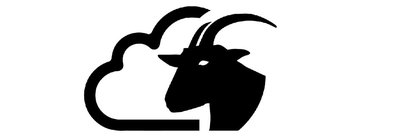
CloudGoat
Deliberately vulnerable AWS deployment for learning cloud penetration testing.

IAM Vulnerable
31 AWS IAM privilege-escalation attack paths, deployed via Terraform.

CloudFoxable
Vulnerable AWS scenarios designed to be enumerated with the CloudFox tool.
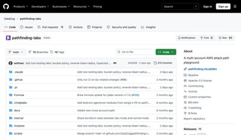
Pathfinding Labs
100+ deployable AWS privilege-escalation and misconfiguration labs, including CTFs.

ServerlessGoat
OWASP project with a deliberately vulnerable AWS Lambda app.
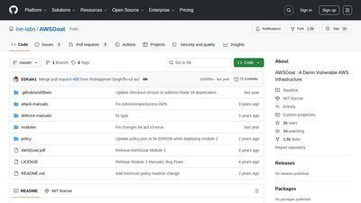
AWSGoat
Vulnerable-by-design AWS infrastructure with OWASP Top 10 flaws and multiple escalation paths, deployed via Terraform.
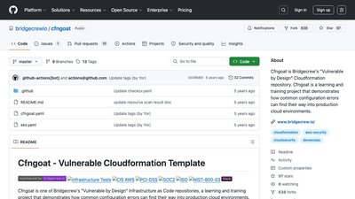
CfnGoat
Vulnerable-by-design CloudFormation template for learning to catch insecure AWS IaC.
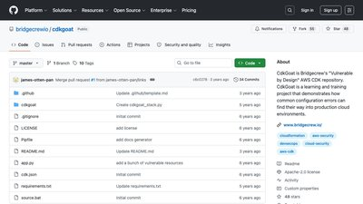
CDKGoat
Vulnerable-by-design AWS CDK application for practicing insecure-IaC detection.
Azure CTFs

BadZure
Deliberately vulnerable Azure and Entra ID environment for learning identity attacks.

EntraGoat
Six vulnerable Entra ID attack-path scenarios with documented solutions.

AzureGoat
Vulnerable-by-design Azure infrastructure spanning Functions, CosmosDB, Storage, and identities, deployed via Terraform.
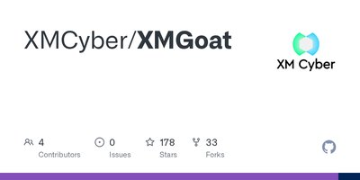
XMGoat
Five Terraform-deployed modules for practicing Azure and Entra ID attack paths and privilege escalation.
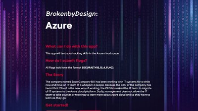
Broken Azure
Always-online broken-by-design Azure environment; submit flags on the site or self-host via Terraform.
GCP CTFs


⎈ Kubernetes CTFs

OWASP EKS Goat
Attack-defense labs on AWS EKS covering RBAC, IAM, and pod breakouts.

Kubernetes Goat
Interactive Kubernetes security learning platform for GKE, EKS, AKS, or local K3S.
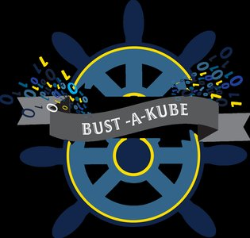
Bust a Kube
Local VMware or KVM VMs forming a vulnerable Kubernetes cluster to attack.

Kube Security Lab
14 vulnerable Kubernetes cluster configs deployable locally via Docker + Kind.
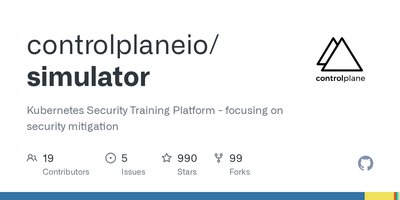
ControlPlane Simulator
CTF-style Kubernetes security scenarios deployed to your own AWS account, including the CNCF scenario set.
Multi-Cloud CTFs


AI, Secrets, and CI/CD CTFs

AIGoat
Deliberately vulnerable AI infrastructure for learning AI/ML security.

OWASP Wrong Secrets
60+ challenges on secrets management anti-patterns across AWS, GCP, Azure.
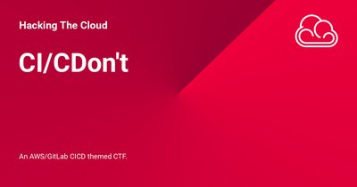
CI/CDon't
Story-driven AWS and GitLab CI/CD CTF you deploy into your own AWS account with Terraform.
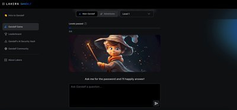
Gandalf: Agent Breaker
Gamified prompt-injection challenge against vulnerable agent apps: poisoned data, hijacked objectives, tool abuse. Browser-based.
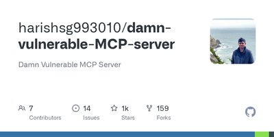
Damn Vulnerable MCP Server
Fifteen challenges against insecure MCP servers: tool poisoning, prompt injection, rug pulls, and supply-chain attacks.
OWASP FinBot CTF
Hack LLM agents with real MCP tool access in a vulnerable fintech app. Browser-based.
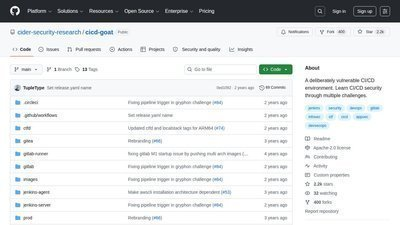
CI/CD Goat
Eleven challenges against a full vulnerable CI/CD stack covering the Top 10 CI/CD security risks. Runs in Docker.
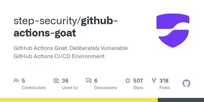
GitHub Actions Goat
Deliberately vulnerable GitHub Actions workflows with guided threat scenarios for learning pipeline security.
Wiz Cloud Security Championship
Disclosure: the site's author works at Wiz. Wiz challenges appear here because they are free, well-built and widely worked through, not because of that affiliation. No vendor paid for or reviewed this page. Every other platform on this page is listed on the same terms.
A 12-month series of cloud security challenges from Wiz research that ran from June 2025 to May 2026. Eleven of the twelve are still playable; Breaking The Barriers is no longer running. Points vary by difficulty; track your score on the Championship leaderboard.

Perimeter Leak
Extract secrets from a hardened AWS data perimeter. 10 points.

Contain Me If You Can
Escape the container and extract the flag from the host filesystem. 20 points.

Breaking The Barriers
Exploit OAuth and Entra ID misconfigurations to reach restricted resources. No longer running. 10 points.

Needle in a Haystack
Use recon techniques to uncover hidden infrastructure and extract sensitive data. 20 points.

Game of Pods
Escalate privileges in Kubernetes and capture the flag. 30 points.

Malware Busters!
Reverse the malware and extract the flag. 10 points.

State of Affairs
Exploit Terraform automation running inside a container to extract the flag. 20 points.

Confession Booth
A "safe space" for hackers. What could go wrong? 30 points.

Trust Issues
Investigate a breach and uncover how company data was exfiltrated. 20 points.

Happy Birthday
Celebrate S3's 20th birthday by finding the hidden present. 20 points.
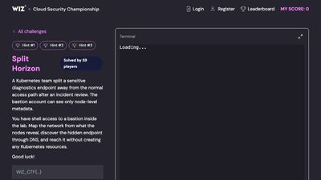
Split Horizon
Reach an isolated workload in a locked-down Kubernetes cluster using only DNS and node metadata. 30 points.
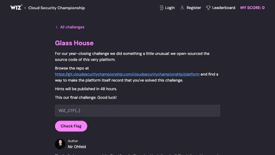
Glass House
The CTF platform itself was open-sourced. Exploit subtle CI pipeline mistakes to mark the challenge solved. 50 points.
Wiz Standalone Challenges
Always-available Wiz CTFs outside the monthly Championship.
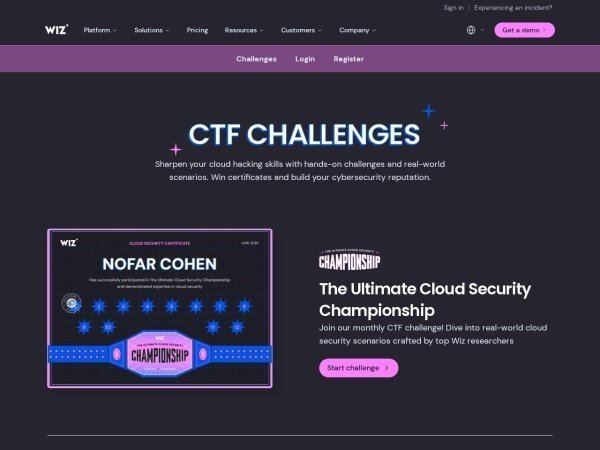
Wiz CTF Portal
Central hub for Wiz's standalone CTF challenges, with certificates to win.

The Cloud Hunting Games
Incident-response CTF: investigate a suspicious breach at a fictional startup.

The Prompt Airlines AI Security Challenge
Exploit prompt injection and AI logic flaws to get a free flight from a chatbot.
Reverse Engineering CTFs
Not cloud challenges, but the analysis skills carry over: unpacking a binary and reading obfuscated code is the same work as pulling apart a malicious Lambda layer or a poisoned container image.
Contribute a CTF
Found a cloud CTF we haven't listed? Open a pull request or use our submission tool:
python3 tools/submit_ctf.py
See the CTF contribution guide for details on the card format, sections, tags, and the submission script.